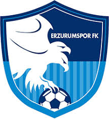
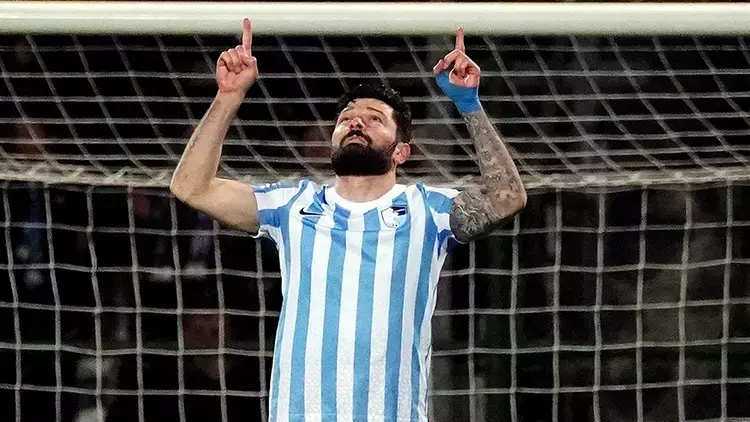

Erzurumspor FK
Erzurumspor FK, Türkiye 1. Lig'inde mücadele eden ve şehrin futbol tutkusunu yansıtan bir takımdır.
Takımın Tarihçesi
Erzurumspor FK, 2018 yılında kuruldu ve kısa sürede Erzurum'u profesyonel liglerde temsil etmeye başladı. Kazım Karabekir Stadyumu'nda oynayan takım, bölgesel futbolun önemli bir parçasıdır.

Başarıları
- 2020-21 sezonunda Süper Lig'e yükseldi.
- Türkiye 1. Lig Play-Off mücadelelerinde yarı final oynadı.
- Türkiye Kupası'nda çeyrek finale yükselme başarısı gösterdi.
Takım Kadrosu

Eren Tozlu
Forvet - 13 golle takımın en skorer oyuncusu.
Tonio Teklic
Orta Saha - 9 asistle en çok gol pası veren oyuncu.
Mustafa Yumlu
Defans - 8 golle savunmada etkili bir isim.